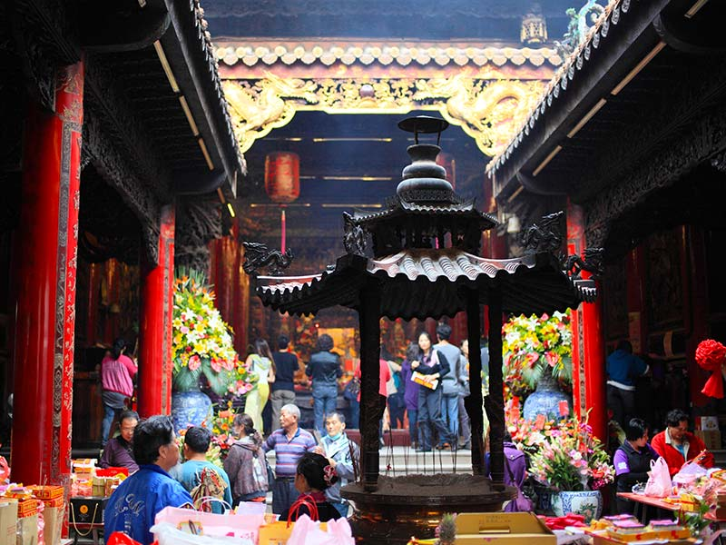

精選景點
-
高美濕地
高美野生動物保護區是臺灣西海岸 一處生態保護區，位於臺中市清水區西側，包括大甲溪出海口，綜合淡水注水與潮汐交替所構成的海岸溼地。其前身原為海水浴場，自從臺中港北岸沙堤築起後，大甲溪挾帶泥沙於此，逐漸淤積成漂飛砂地帶，成為現今所見「高美濕地」。
相關連結 : 高美濕地
-
秋紅谷廣場
不論什麼時節，漫步在秋紅谷廣場都是個賞心悅目的享受！位於臺中市臺灣大道旁的秋紅谷廣場，是臺中地區特有的凹型市民休閒綠地，占地3公頃多的秋紅谷公園，擁有湖泊、紅樹、綠草坪、觀景橋，相當適合散步、約會、運動，白天有舒服的綠意；夜晚有著精采萬變的不夜燈火，開放迄今迅速成為臺中最火紅的景點之一。
相關連結 : 秋紅谷廣場
-

大甲鎮瀾宮
大甲區鎮瀾宮為全臺最知名的媽祖廟之一，已有二百多年歷史，全年香火鼎盛、信徒絡繹不絕，加上每年農曆三月舉辦的遶境出巡，已是世界級的宗教盛事，吸引國內外遊客前來參與，是大甲最具代表性的景點，鎮瀾宮的紫羅蘭翡翠媽祖和地下一樓媽祖文化館中的黃金媽祖更是鎮殿之寶，現在媽祖更被列為臺中三寶之一，成為臺中旅遊的必遊景點。
相關連結 : 大甲鎮瀾宮